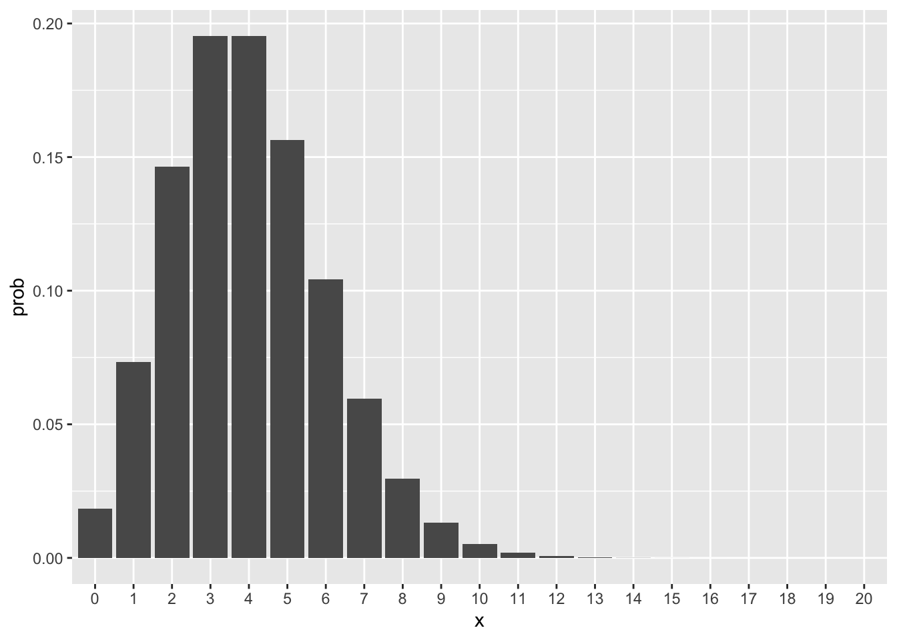
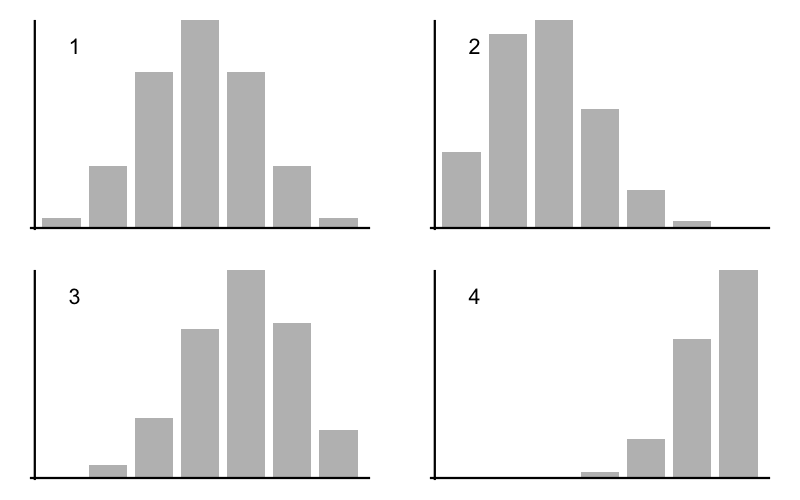

Z fz Fz
1 0 1.239933e-01 0.1239933
2 1 3.144757e-01 0.4384690
3 2 3.234607e-01 0.7619297
4 3 1.746384e-01 0.9365681
5 4 5.336174e-02 0.9899298
6 5 9.210382e-03 0.9991402
7 6 8.297641e-04 0.9999700
8 7 3.002956e-05 1.0000000Practice: Probability Distributions
1) Tossing a coin 4 times
A fair coin is tossed independently 5 times. P(heads) = P(tails) = 0.5. Use the binomial probability to find the:
probability of all heads
probability of no heads
probability of at least one heads
probability of more heads than tails
probability of less than three heads
Show answers
\(P(X = 5) = \binom{5}{5} (0.5)^5 (1 - 0.5)^0\) = 0.03125
\(P(X = 0) = \binom{5}{0} (0.5)^0 (1 - 0.5)^5\) = 0.03125
\(P(X \geq 1) = 1 - P(X = 0)\) = 0.96875
\(P(X \geq 3)\) = 0.5
\(P(X < 3)\) = 0.5
2) Batch of smartphones
Suppose that a batch of smartphones contains 15% of defective pieces. Consider a random sample of 5 smartphones are taken from the batch. Let \(X\) be a binomial random variable representing the number of defective pieces.
Find \(P(X = 0)\)
Find \(P(X = 1)\)
Find \(P(X = 5)\)
If a quality inspection will reject the batch of tablets if two or more defective pieces are found, what is the probability that the batch will be rejected?
Show answers
\(P(X = 0) = \binom{5}{0} (0.15)^{0} (1 - 0.15)^{5}\) = 0.4437
\(P(X = 1) = \binom{5}{1} (0.15)^{1} (1 - 0.15)^{4}\) = 0.3915
\(P(X = 5) = \binom{5}{5} (0.15)^{5} (1 - 0.15)^{0}\) = 0.0001
\(P(k \geq 2) = 1 - P(x < 2)\) = 0.1649
3) Guessing the distribution
In a group of 20 college students, four are athletes. You select three of the 20 students at random (first, second, and third) and ask their major. The distribution of the number of athletes you choose is:
binomial with n = 20 and p = 0.2.
binomial with n = 3 and p = 0.2.
Not binomial.
Show answers
Part (c). The selections are not independent; once we choose one student, it changes the probability that the next student is an athlete.
4) Selecting students in a class of 30
In a class of 30, there are 18 male students and 12 female students. 10 students have \(A\)’s, 10 have \(B\)’s, and 10 have \(C\)’s. A student’s grade and sex are independent.
If you randomly select one student, what is the chance of selecting a female with grade \(B\)?
If you randomly select one student, what is the chance of selecting a female student or a grade \(B\) student?
Choose 10 students at random from the class without replacement. What is the probability that they all have \(B\)’s?
Choose 10 students at random from the class, with replacement. What is the probability that 5 are male and 5 are female?
Show answers
P(Female and B-grade) = \((12/30) \times (10/30) = 4/30 \approx 0.1333\)
P(Female or B-grade) = \((12/30) + (10/30) - (4/30) = 18/30 = 0.6\)
\((10/30) \times (9/29) \times \dots \times (1/21)\).
This can also be solved using hypergeometric distribution with parameters \(N = 30\), \(G = 10\), \(n = 10\). Using R:
dhyper(x = 10, m = 10, n = 20, k = 10)\(\binom{10}{5} (18/30)^5 (12/30)^5 \approx 0.20\)
5) Deck of 100 cards
Consider a deck of 100 cards, consisting of four suits: 25 cards are Gryffindor, 25 are Ravenclaw, 25 are Hufflepuff, and 25 are Slytherin. Suppose we are interested in the number of Ravenclaw cards dealt in a hand of seven. Call this number \(Z\).
What is the distribution of \(Z\)?
Bernoulli
Binomial
Hypergeometric
Poisson
Other
Based on your answer for part a), find the probabilities \(P(Z=z)\) for all valid values of \(z\).
Find the values of \(F(z) = P(Z \leq z)\).
Show answers
Option (iii), with parameters: \(N = 100\), \(G = 25\), \(n = 7\)
Using R, we can get all the probability values of \(f(z)\) with:
dhyper(x = 0:7, m = 25, n = 75, k = 7)Using R, we can get all the cumulative probabilities \(F(z)\) with:
phyper(q = 0:7, m = 25, n = 75, k = 7)
6) Poisson Distribution
The function dpois() gives you probabilities of a Poisson random variable. For example, let \(X\) be a Poisson variable with \(\lambda = 5\). Recall that \(X\) takes non negative values \(x = 0, 1, 2, 3, \dots\).
Here’s some code in R to get the probability distribution, and graph its probability histogram
x = 0:20 # x values, stop at 20, but in theory they go on
prob = dpois(x, lambda = 5)
# probability histogram
data.frame(x = factor(x), prob = prob) |>
ggplot(aes(x = x, y = prob)) +
geom_col()What does the parameter \(\lambda\) represent? (i.e. how do you make sense of it?)
Use R to graph the probability histogram for various parameter values: \(\lambda\) = 0.5, \(\lambda\) = 2, \(\lambda\) = 4.
Show answers
From the STAT 20 notes: “\(\lambda\) is called the rate of the distribution, and represents how many successes we expect in the given time unit.”
Example with
lambda = 4
x = 0:20 # x values, stop at 20, but in theory they go on
prob = dpois(x, lambda = 4)
# probability histogram
data.frame(x = factor(x), prob = prob) |>
ggplot(aes(x = x, y = prob)) + geom_col()
7) Binomial Distributions
The following figure shows four binomial distributions with \(n\) = 6 trials. Match the given probability of success with the corresponding graph.

p = 0.30 goes with graph:
p = 0.50 goes with graph:
p = 0.65 goes with graph:
p = 0.90 goes with graph:
Show answers
- Graph 2
- Graph 1
- Graph 3
- Graph 4